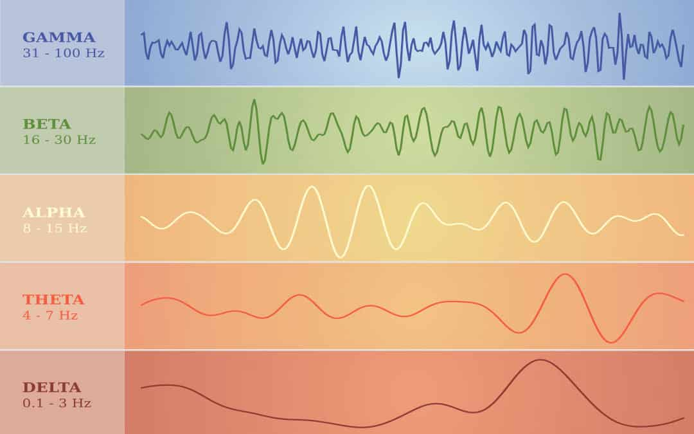

Bienvenue sur NeuroHarmonics
Optimisez vos états mentaux avec les battements binauraux. NeuroHarmonics est une application Android révolutionnaire qui génère des ondes sonores spécifiques pour induire des états cérébraux optimaux. Que vous souhaitiez améliorer votre sommeil, votre concentration ou votre créativité, notre technologie de battements binauraux vous accompagne.
Fonctionnalités
- Ondes Delta pour un sommeil profond
- Ondes Theta pour la méditation
- Ondes Alpha pour la relaxation en action
- Ondes Beta pour la concentration
- Ondes Gamma pour les processus créatifs
